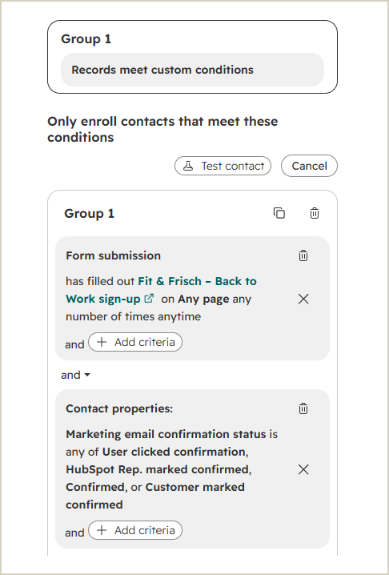
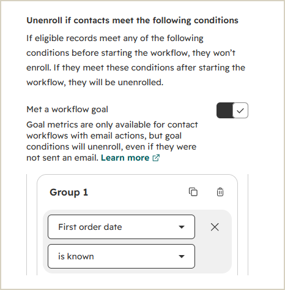
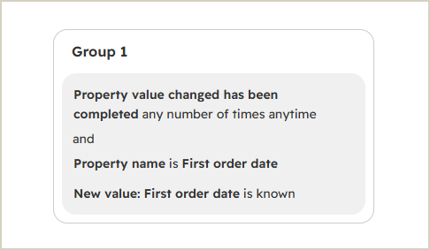
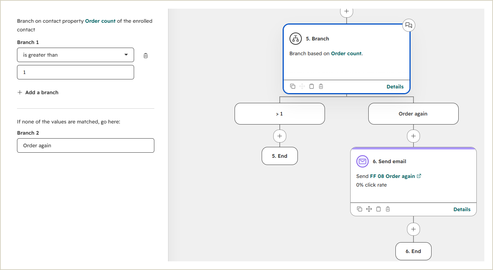

Landing page · HubSpot · Email journey
Fit & Frisch: from sign-up to repeat order
A landing page and a HubSpot email journey for a fictional Berlin lunch brand: office workers sign up, confirm their email, get a free-delivery code, and receive reminders until their first order and beyond.
About this project: Fit & Frisch is a fictional brand created for a course task. The offer, menu and the “500+ Berlin offices” figure on the page are invented for the scenario. The HubSpot setup ran in a trial account with test contacts only.
Part 1: The landing page
Scenario
You work for Fit & Frisch, a small healthy meal-prep chain. The owner says: "We want more customers and to become better known this autumn. Put together a campaign!"
Campaign goal - "Back to Work"
Generate 150 qualified leads (email addresses submitted via a landing page) from Berlin office workers in Mitte, Kreuzberg, and Prenzlauer Berg between 1–14 September 2026, via an Instagram and Google ads campaign offering a free-delivery promo code redeemable on their first order (one code per customer, valid for 14 days after they confirm their email).
How I built it
- Goal and plan with ClaudeI defined the campaign goal, audience and offer, and planned the page sections with Claude.
- First build with ClaudeClaude built the page for one scenario as a single HTML file.
- My edits in VS CodeI reworked the structure, rewrote the copy, and changed the colours with VS Code.
The landing page
Hero
“Back at your desk. Back to eating well.” One button for the code, and an inbox card that previews the email.
How it works
Three steps:
- drop your email
- confirm it and get your code
- order lunch within 14 days
Menu + final call
A preview of four dishes, then the email form with a consent line. The fine print sets the terms: sign up by 14 September, code valid for 14 days after confirmation, one code per customer.

Part 2: The email journey
Turn sign-ups into first orders, and first orders into repeat customers.
Start at the top and follow steps 1 to 3. Click an email to open it, or i for details.
-
Start here. An Instagram or Google ad brings an office worker to the landing page.
-
1
Sign up and confirmDouble opt-ini
Clicked confirm?No → no code, no further emailsi - Yes70% confirm their email
-
2
Get the code, then remindersWorkflow 1i
Ordered? The contact leaves step 2 at once, wherever they are, and moves to step 3.i
- First order30% order within 14 days
-
3
Thank, ask, invite backWorkflow 2i
Order count = 1?+6 days · more than 1 → endi - Order again40% within 30 days
-
Goal reached: a repeat customer.


Also: one-off campaign1 October · no workflowi
Targets invented for the scenario. Every email opens its demo copy, and every button in it opens a demo page.
Contact propertiesData the journey uses
- Promo code
- Text 1
- District
- Text 2
- UTM source / medium / campaign
- Text 3
- First order date
- Date 4
- Order count
- Number 5




Click a screenshot to enlarge it.
Both workflows cloned, every delay set to 2 minutes, four test contacts.
| Test contact | FF 01 | FF 02 | FF 03 | FF 04 | FF 05 | FF 06 | FF 07 | FF 08 |
|---|---|---|---|---|---|---|---|---|
| ASigns up, never confirms | ||||||||
| BConfirms, never orders | ||||||||
| COrders after the menu reminder | ||||||||
| DOrders twice |
SentNot sentNot part of this testWhat the test proves
Contact C, step by stepSee the HubSpot log
- Signs up and confirms
- FF 02 Welcome + code
- FF 03 Menu reminder
- First order → leaves Workflow 1, gets FF 06
- FF 07 Feedback
- FF 08 Order again (order count = 1)
What testing taught me
- HubSpot calls a clicked confirmation “User clicked confirmation”, not “Confirmed”. The enrollment troubleshooter showed it, and I fixed the trigger.
- Without the consent box, confirmed leads never got their code.
- Confirmation is stored per address, so each test needs a new one.
- Unsubscribed addresses get no marketing email, test ones included.
- Campaign emails get HubSpot’s own UTM tags, so I checked the final links in test sends.
What I’d change in production
- The shop generates each code and sends it to HubSpot.
- The order confirmation goes out as a transactional email.
- Orders sync by email address, and the code is tied to the sign-up address, so an order with another address still stops the reminders.
- The form closes on 14 September; the workflows run until early October.
AI use.
- Landing page: AI-assisted. Claude built the first version; I restructured it and rewrote the copy.
- Email copy: AI-assisted. Drafted with Claude, edited by me.
- Food photos: AI-generated with Google Flow.
- HubSpot setup and testing: done by me.